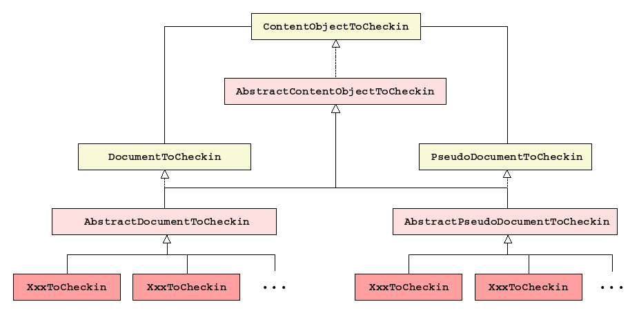

Documents and pseudo-documents to check-in are represented by instances of
{@link net.mumie.cocoon.checkin.ContentObjectToCheckin ContentObjectToCheckin}. This
interface is implemented by the abstract class {@link
net.mumie.cocoon.checkin.AbstractContentObjectToCheckin
AbstractContentObjectToCheckin}, which has two abstract subclasses: {@link
net.mumie.cocoon.checkin.documents.AbstractDocumentToCheckin
AbstractDocumentToCheckin} and {@link
net.mumie.cocoon.checkin.pseudodocs.AbstractPseudoDocumentToCheckin
AbstractPseudoDocumentToCheckin}. The former represents documents, the latter
pseudo-documents. {@link net.mumie.cocoon.checkin.documents.AbstractDocumentToCheckin
AbstractDocumentToCheckin} is extended by several non-abstract classes
XxxToCheckin where Xxx denotes a document type. Each of them
represents a document of a particular type. These classes are autocoded by the XSL
stylesheet DocumentToCheckin.xsl. Similarly, {@link
net.mumie.cocoon.checkin.documents.AbstractPseudoDocumentToCheckin
AbstractPseudoDocumentToCheckin} is extended by several non-abstract classes
XxxToCheckin where Xxx denotes a pseudo-document type. Each of them
represents a pseudo-document of a particular type. These classes are not autocoded.
There are two more interfaces: {@link net.mumie.cocoon.checkin.documents.DocumentToCheckin DocumentToCheckin} and {@link net.mumie.cocoon.checkin.pseudodocs.PseudoDocumentToCheckin PseudoDocumentToCheckin}. The former represents documents, the latter pseudo-documents. Both extend {@link net.mumie.cocoon.checkin.ContentObjectToCheckin ContentObjectToCheckin}. The former is implemented by {@link net.mumie.cocoon.checkin.documents.AbstractDocumentToCheckin AbstractDocumentToCheckin}, the latter by {@link net.mumie.cocoon.checkin.pseudodocs.AbstractPseudoDocumentToCheckin AbstractPseudoDocumentToCheckin}. Currently, both interfaces are void (define no methods).
The relationships between the classes are shown in the following UML diagram. A more detailed diagram is available, too.
{kind=link}